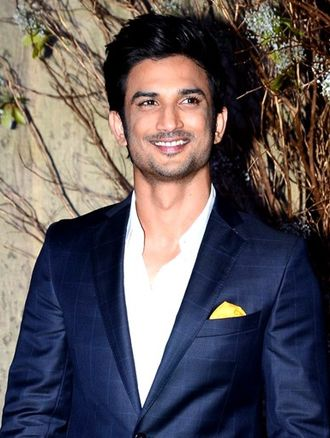

|
Sushant Singh Rajput An Inspirational Journey |
|
 Remembering Sushant Singh Rajput "To Know More, Click on the Image" |
|
Biography Sushant Singh Rajput was born in Patna, Bihar, to Krishna Kumar Singh and Usha Singh. Known for his curiosity and brilliance, he excelled academically and won the National Olympiad in Physics. Though he started with engineering, his heart was set on acting, which he pursued with dedication and talent, making him beloved in the entertainment industry. |
|
Career Sushant's journey began on television with Kis Desh Mein Hai Meraa Dil and Pavitra Rishta. His Bollywood debut in Kai Po Che! (2013) opened doors to more notable films like Shuddh Desi Romance and M.S. Dhoni: The Untold Story, where he portrayed Indian cricket captain Mahendra Singh Dhoni, earning immense acclaim. |
|
Achievements Known for his versatility and charisma, Sushant won the Screen Award for Best Male Debut for Kai Po Che! and the Filmfare Critics' Award for Best Actor in M.S. Dhoni. His intellectual curiosity led him to stargazing and astrophysics, inspiring many to follow their passions. |
|
Legacy & Filmography Sushant's work included memorable roles in films such as Raabta, Kedarnath, Chhichhore, and Dil Bechara. Despite his tragic passing on June 14, 2020, his influence endures through his work and the inspiration he gave to millions. He lives on in the hearts of his fans.
|
|
Awards Television: Indian Television Academy Awards (2009, 2010), BIG Star Entertainment Awards (2010) Film: Producers Guild Film Awards (2014), Screen Awards (2017), Indian Film Festival of Melbourne (2017) His awards celebrate a career cut short but marked by excellence and heartfelt performances. |
| 2024 Sushant Singh Rajput Tribute Page |